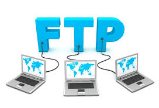
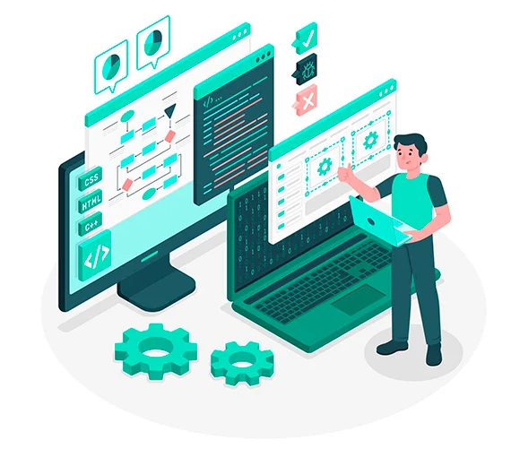
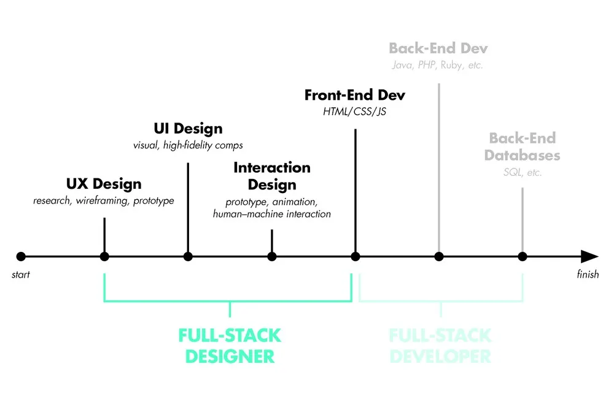

El término Internet se utiliza para hacer referencia a una red de computadoras interconectadas entre sí a nivel mundial con el objetivo de hacer común información de acceso público. Esta red utiliza un lenguaje en común para la comunicación entre los dispositivos.

Su nombre proviene del anglicismo International Network of Computers, cuya traducción al español es Red internacional de Computadoras, también denominada como Red Informática Descentralizada de Alcance Global o Red de Redes.
Internet surge en el año 1969 en Estados Unidos, cuando la Agencia de Proyectos de Investigación Avanzada ARPA, hoy llamada DARPA (Defense Advanced Research Projects Agency), buscó mejorar los sistemas de comunicación en remoto entre su red de computadoras.
No obstante, no es hasta que nace la Red de la Agencia para los Proyectos de Investigación Avanzada (Advanced Research Projects Agency Network) que es posible establecer una red de comunicaciones de alta velocidad con el objetivo de crear una red de computadoras que les permitiera a centros de investigación y defensa mantener contacto de forma remota sin que se viese interrumpido su funcionamiento en caso de que algunos nodos fueran atacados o destruidos.
WWW son las siglas de “World Wide Web”, que en español significa “Red Mundial de Información”. A menudo, la gente confunde la WWW con Internet, pero son conceptos diferentes aunque estrechamente relacionados.
La WWW es un sistema de información que funciona a través de Internet. Podemos pensar en Internet como una gran red de computadoras conectadas entre sí, mientras que la WWW es un servicio que utiliza esa red para compartir y acceder a información mediante páginas web.
La WWW tiene como función principal permitirnos acceder, compartir y conectar información de manera sencilla a través de hipervínculos (los enlaces que nos llevan de una página a otra).
Una carpeta local es un directorio de archivos almacenado directamente en tu dispositivo (computadora o servidor local), mientras que una carpeta remota es un directorio de archivos que se encuentra en un servidor o equipo diferente y al que se accede a través de una red, como una carpeta compartida en la nube o en otro ordenador de la red.
Hay varias razones por las que es posible que desee almacenar correos electrónicos en carpetas locales. Por ejemplo, puede mover o copiar sus correos electrónicos allí para liberar espacio en el servidor o para asegurarlos en caso de una falla del servidor. También puede mover mensajes allí para poder acceder a ellos sin conexión. Simplemente no olvide que también puede usar la función 'Descargar mensajes para uso sin conexión' que descarga el contenido de las carpetas IMAP seleccionadas o de toda la cuenta en la base de datos local de la aplicación.
Mientras las remotas pueden conectarse a carpetas de su red que estén disponibles para compartir mediante CIFS (Sistema Común de Archivos de Internet). Una vez conectada una carpeta compartida remota, puede acceder a ella a través de BizNASFile Manager y usarla como origen o destino de una copia de seguridad.

FTP es el acrónimo de «Protocolo de Transferencia de Ficheros» (en inglés, File Transfer Protocol). FTP es un protocolo que se utiliza para transferir todo tipo de archivos entre equipos conectados a una red, por ejemplo Internet.
Las cuentas de FTP son el medio estándar para gestionar el contenido alojado en un servidor web: enviar archivos, descargarlos, crear directorios, borrar ficheros, etc.
Cada cuenta FTP se identifica por su nombre de usuario y se valida utilizando una contraseña. Asimismo, cada cuenta de FTP está asociada a un directorio que se comporta como su raíz: el usuario que conecta por FTP puede acceder a los ficheros creados en directorios y subdirectorios a partir de su raíz, pero no más más atrás.
La experiencia de usuario (conocida también como UX) se refiere a la experiencia general que tiene un cliente o usuario al interactuar con un producto, sistema o servicio.
Reúne todas las opiniones de los usuarios respecto de un producto o servicio, por ejemplo, facilidad de uso, accesibilidad, diseño visual, funciones de la interfaz de usuario e impacto emocional de usar el producto, para luego hacer una evaluación.
La UX se ocupa principalmente de la usabilidad y la eficacia del propio producto o servicio. El diseño de la experiencia del usuario se centra en elementos como la navegación, el diseño visual, el rendimiento y la interfaz de usuario. El objetivo del proceso de diseño de UX es garantizar que los usuarios puedan alcanzar fácilmente sus objetivos sin frustración.
.jfif)
Una interfaz de usuario es la parte de un producto de software que el cliente realmente ve.
Una interfase de usuario puede incluir el diseño de pantallas de visualización o salida impresa, texto visualizado o impreso, comandos, ayuda en línea y mensajes. Una interfaz de usuario es también la parte de un producto de software que debe traducir o realizar cambios culturales para los usuarios de otros países o culturas.
El sistema operativo proporciona funciones de software específicas para ayudarle a organizar el texto desde la interfaz de usuario y almacenar dicho texto en una biblioteca para facilitar la traducción. El sistema operativo también proporciona un gestor de interfaces de usuario que proporciona una interfaz de usuario coherente. El gestor de interfaces de usuario proporciona un soporte completo para definir y ejecutar paneles como, por ejemplo, pantallas y ayuda en línea.
El sistema de nombres de dominio (DNS) es el directorio telefónico de Internet. Las personas acceden a la información en línea a través de nombres de dominio como nytimes.com o espn.com. Los navegadores web interactúan mediante direcciones de Protocolo de Internet (IP). El DNS traduce los nombres de dominio a direcciones IP para que los navegadores puedan cargar los recursos de Internet.
Cada dispositivo conectado a Internet tiene una dirección IP única que otros equipos pueden usar para encontrarlo. Los servidores DNS suprimen la necesidad de que los humanos memoricen direcciones IP tales como 192.168.1.1 (en IPv4) o nuevas direcciones IP alfanuméricas más complejas, tales como 2400:cb00:2048:1::c629:d7a2 (en IPv6).
El proceso de solución de DNS supone convertir un nombre de servidor (como www.example.com) en una dirección IP compatible con el ordenador (como 192.168.1.1). Se da una dirección IP a cada dispositivo en Internet, y esa dirección será necesaria para encontrar el dispositivo apropiado de Internet, al igual que se usa la dirección de una calle para encontrar una casa concreta. Cuando un usuario quiere cargar una página, se debe traducir lo que el usuario escribe en su navegador web (example.com) a una dirección que el ordenador pueda entender para poder localizar la página web de example.com.
Para entender el proceso de la resolución de DNS, es importante conocer los diferentes componentes de hardware por los que debe pasar una consulta de DNS. Para el navegador web, la búsqueda de DNS se produce "en segundo plano" y no requiere ninguna interacción del ordenador del usuario, aparte de la solicitud inicial.
El hosting es un servicio de alojamiento web que te permite almacenar los archivos de tu página y subirlos a Internet. Cuando alguien teclea el nombre de dominio de tu sitio web en su navegador, en realidad se está dirigiendo a un servidor específico: la unidad de almacenamiento digital de tu sitio web. Este servidor contiene todos los elementos de tu página, desde texto e imágenes hasta código y videos. Tiene una dirección digital única llamada dirección IP, a la que los usuarios pueden acceder escribiendo el nombre de dominio en su navegador.
Cuando alguien introduce la dirección de tu página web en su navegador o pulsa en un enlace que le dirige a esta, su dispositivo se comunica con el servidor donde está almacenado tu sitio web. Este servidor, una computadora o un programa informático siempre activo, devolverá los archivos necesarios para mostrar tu página web en la computadora o el dispositivo del visitante. Optar por un servicio de hosting significa básicamente alquilar un espacio en estos servidores para almacenar todos los archivos y datos de tu sitio web.
El hosting es la pieza clave del rendimiento y la accesibilidad de tu sitio web. Piénsalo: cuando la gente visita tu página, espera tiempos de carga rápidos, imágenes de alta calidad y un entorno seguro. Tu proveedor de hosting desempeña un papel clave para satisfacer estas expectativas. Un alojamiento web fiable garantiza que tu sitio esté disponible las 24 horas del día, de modo que no pierdas clientes potenciales, ingresos por publicidad u otras oportunidades.
Generalmente los diseñadores que trabajamos en el mundo de diseño de Apps, diseño web o UX/UI estamos más familiarizados con el término Full Stack Developer. Es sabido que este termino surgió primero que el de Full Stack Designer ¿pero qué significa ser “Full Stack”?
Se refiere a una persona que tiene múltiples habilidades que puede utilizar de forma independiente para completar el proceso de diseño o desarrollo de un producto. Significa que el diseñador puede entender el problema para luego diseñar una solución y, como paso final, llevarlo a la realidad.
El mayor beneficio que podemos aportar como Full Stack Designer es el pensamiento comprensivo. Un diseñador que está familiarizado con el desarrollo del producto y el proceso de diseño conoce los límites del diseño de producto. Un Full Stack Designer tiene más conciencia de lo que puede o no funcionar en el diseño ya que tiene expectativas más realistas incluso antes de empezar a mover píxeles o escribir código.
Tener un set expansivo de skills es bueno para nuestros empleadores ya que forma equipos interdisciplinarios y colaborativos para hacer foco en un área en específico.